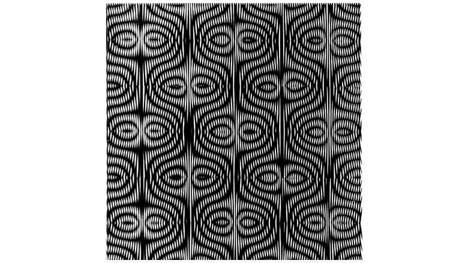

minimal

Ludwig Wilding
https://www.wikiart.org/en/ludwig-wilding-どんな人
モアレをつかった作品を多くつくっています。線と線をずらしながら重ね合せるとぐにょぐにょして、目に悪そうな模様が作られますが、このアーティストは、その現象をうまく利用して視覚的に面白い模様を追求していました。
-解説
線を並べた面を上下にわけてずらして配置することで、モアレを作っています。線の角度のずらしかたを工夫することによって、独特な模様を作り出しています。
-好きなところ
モアレの「予測できない」形というところが好きです。 適当に線を並べて、回転させて重ねるだけでも、変な模様がいっぱいできて面白いです。